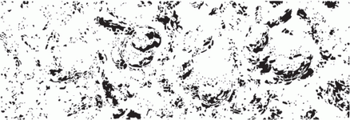
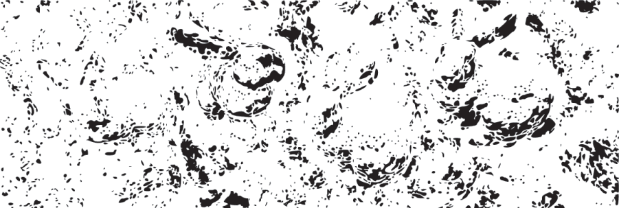
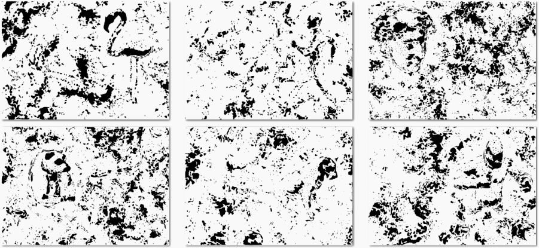
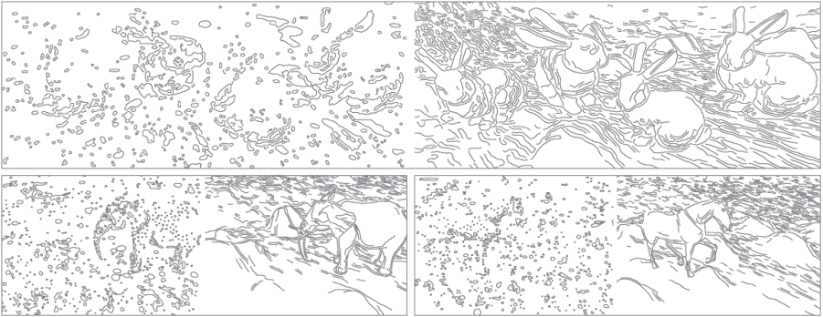

Emerging Images (An article in Technology Review published by MIT reported our work)
Niloy J. Mitra, Hung-Kuo Chu, Tong-Yee Lee, Lior Wolf, Hezy
Yeshurun, Daniel Cohen-Or
ACM SIGGRAPH ASIA 2009
Abstract:
Emergence refers to the unique human ability to aggregate
information from seemingly meaningless pieces, and to perceive a whole that is
meaningful. This special skill of humans can constitute an effective scheme to
tell humans and machines apart. This paper presents a synthesis technique to
generate images of 3D objects that are detectable by humans, but difficult for
an automatic algorithm to recognize. The technique allows generating an
infinite number of images with emerging figures. Our algorithm is designed so
that locally the synthesized images divulge little useful information or cues
to assist any segmentation or recognition procedure. Therefore, as we
demonstrate, computer vision algorithms are incapable of effectively processing
such images. However, when a human observer is presented with an emergence
image, synthesized using an object she is familiar with, the figure emerges
when observed as a whole. We can control the difficulty level of perceiving the
emergence effect through a limited set of parameters. A procedure that
synthesizes emergence images can be an effective tool for exploring and
understanding the factors affecting computer vision techniques.
Results:
|
 |
|||
|
(Top) This image, when stared at for a while, can reveal four
instances of a familiar figure. Two of the figures are easier to detect than
the others. Locally there is little meaningful information, and we perceive
the figures only when observing the whole figures. |
|||
|
|||
|
|||
|
|||
|
(Below) Typical emergence images generated by our synthesis
algorithm. We generate a range of examples on various subjects synthesized at
different difficulty levels. Each example contains exactly one subject.
(Please refer to supplementary material for other examples.) |
|||
|
 |
|||
|
(Beow) In many computer vision recognition or segmentation
algorithms, the first stages comprise of multi-scale edge detection or other
means of bottom-up region processing. At multiple-scales, we detect edges
using standard Canny edge detector, and retain the ones that persists scales.
Such curves are then linked together based on spatial proximity and curvature
continuity. We observe that while on the original renderings the method
successfully extracts the feature curves (right image in each box), on the
emerging images the results can mostly be seen as noise. This indicates the
difficulty that bottom-up algorithms face when detecting objects in the
emergence images. |
|||
|
 |
|||
|
|||
|
|||
Bibtex:
@article{ei_siga_09,AUTHOR = "Niloy J. Mitra and Hung-Kuo Chu and Tong-Yee Lee and Lior Wolf and Hezy Yeshurun and Daniel Cohen-Or",TITLE = "Emerging Images",JOURNAL = "ACM Transactions on Graphics",VOLUME = "27",NUMBER = "3",YEAR = "2009",NOTE = "to appear",}
|